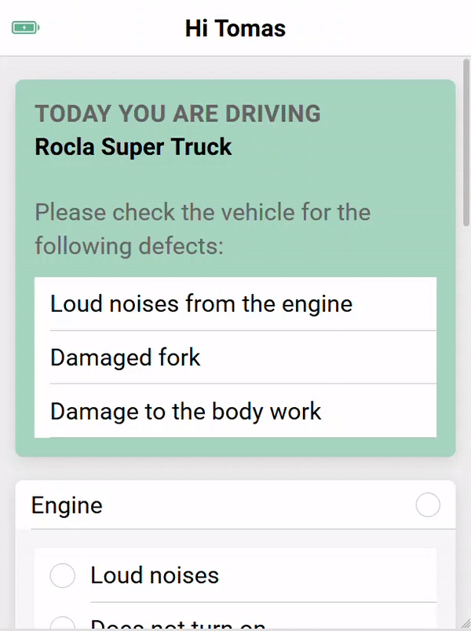

Hi - I'm Daisy, and I'm here to help you.
First of all - after you have logged in, please complete the truck pre-check in order to confirm that various features of the truck are in proper working order.
Starting the Truck

Video courtesy of Nissan
Once you have confirmed that it is safe to drive your Rocla forklift, please confirm that the select lever is placed in neutral position and the parking brake is set, as shown above. Then, insert the key into the keyswitch and start the engine.
During and After Your Ride
Use the task list screen to receive instructions from your manager.
When it is time to dismount the forklift, apply the parking break and confirm the select lever is in neutral. Lastly, you can turn the key switch off and remove the key.